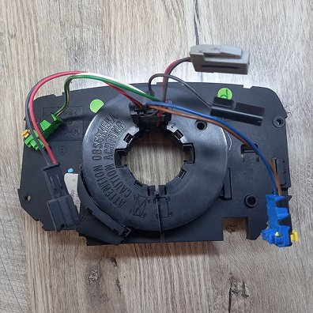

Подрулевой шлейф Renault Megane 2
Предлагаем шлейф подрулевого переключателя для Рено Меган 2 с круиз контролем и без круиза. Отправим уже готовый шлейф руля, настроенный в нулевое положение руля в замен на Вашу сломанную деталь. Все шлейфы полностью перебраны, с устранением причин разрыва в будущем. Гарантия на деталь. Характерными признаками оборванного шлейфа является сначала хруст в руле при выворотах, а потом наличие ошибки по подушке безопасности и также, если авто с круиз контролем то кнопки круиза на руле также перестают работать. Шлейф руля Renault Megane 2 купить в Украине легко - отправляем быстро и предоставляем гарантию.
- ✅ Обмен на ваш неисправный шлейф
- ✅ Оригинальный Valeo шлейф
- ✅ Консультирование по установке
- ✅ Быстрая отправка
- ✅ Гарантия качества
💰 Цена: 900 UAH